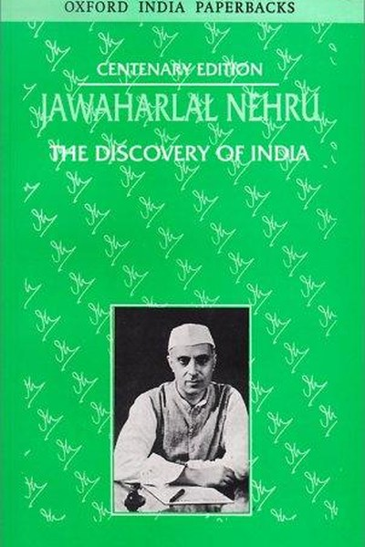

Library › Psychology & People
The Discovery of India — Summary & Key Lessons

A nation's five thousand years, seen through the eyes of its first prime minister.
📖 OPEN THE FULL INTERACTIVE BREAKDOWN →🌐 Read it in Hindi, Hinglish, Gujarati, Tamil & 22 more languages — free, with audio.
💡 The Big Idea
Written in prison between 1942-45, this is Nehru's attempt to answer a personal and national question: what is India? His answer: a civilization defined not by a single faith or race but by a continuous, absorbing encounter of ideas — Vedic philosophy, Buddhist dissent, Islamic synthesis, British modernity — each layer adding to a living, contradictory, argumentative whole. The book is both history and a case for pluralism: India's greatness is its capacity to hold many truths at once.
🧠 The 6 Key Lessons
Lesson 1: Identity Is Built by Absorption, Not Purity
The Idea of India
Nehru's central argument: India was never a 'pure' civilization — it absorbed Greeks, Central Asians, Arabs, Europeans, each wave adding a layer. Its identity is not one answer but a long conversation. The lesson: cultures (and people) that fear absorption stagnate; those that metabolize difference grow. The question 'what is truly Indian' is answered not by exclusion but by synthesis.
📖 Example: Indian mathematics travelled to the Arab world and back as 'Arabic numerals'; Indian textiles shaped global fashion; each encounter changed both sides. The practical edge: 'identity is built by absorption, not purity' is not a one-time decision — it's a… Read the full example →
⚡ Do this: Identify one idea or influence from outside your 'tribe' — field, culture, community — that has genuinely improved your life. Honour it.
Lesson 2: Freedom Is the Condition for Flourishing
The Long Colonization
Nehru chronicles how colonial rule systematically de-industrialised India — textile, shipbuilding and science all collapsed under British policy designed to feed the empire. His point: political freedom is not abstract — it is the precondition for economic and intellectual life. Oppressed societies don't just suffer; they shrink.
📖 Example: India's share of world manufacturing collapsed from roughly a quarter before colonization to a fraction by independence — a decline engineered, not accidental. Here's the part that usually gets missed: 'freedom is the condition for flourishing' works… Read the full example →
⚡ Do this: Audit your own freedom: what external constraint — job, environment, relationship — is quietly shrinking your growth? Name one.
Lesson 3: Science and Spirituality Are Allies, Not Enemies
The Scientific Temper
Nehru was a scientist and a romantic: he championed the scientific temper — questioning, evidence, experiment — while insisting that India's spiritual tradition asked questions science couldn't yet answer. His synthesis: the scientific attitude is the spiritual attitude applied to the world. Both demand humility before reality.
📖 Example: India's ancient achievements in mathematics, medicine and astronomy — the zero, the decimal, early surgery — were the products of a culture that valued both inquiry and inner life. Read the full example →
⚡ Do this: Pick one belief you hold emotionally and run it through a scientific test: what evidence would change your mind?
Lesson 4: Diversity Is a Strength That Must Be Managed
Unity in Diversity
India's languages, faiths and regions make it chaotic and rich. Nehru's warning: unity is not automatic — it must be built daily through respect, federal balance and shared institutions. Diversity without management becomes fragmentation; diversity with respect becomes strength.
📖 Example: India's constitution — which Nehru helped shape — created a framework where a billion people with 100+ languages could argue inside one system rather than outside it. In practice, 'diversity is a strength that must be managed' shows up in tiny daily choices… Read the full example →
⚡ Do this: In your team or family, identify one difference you've been smoothing over. Give it legitimate space this month.
Lesson 5: History Is the Raw Material of the Future
The Uses of the Past
Nehru wrote history not to escape the present but to equip it: understanding India's past greatness and its failures gave the freedom movement its confidence and its warnings. His lesson: a people (or a person) who doesn't know their own story is easily manipulated; those who do, choose deliberately.
📖 Example: Knowing India's ancient scientific tradition gave Nehru's generation the confidence to plan a modern, industrial, scientific India — IITs, ISRO, atomic energy — rather than a museum. Read the full example →
⚡ Do this: Write a one-page honest history of yourself: three peaks, three failures, three patterns. Use it to choose your next move.
Lesson 6: The Argument Itself Is the Civilization
The Argumentative Tradition
The book's quiet thesis: India is a civilization of arguments — Upanishadic debates, Buddhist councils, bhakti dissent, modernist reform. What holds India together is not agreement but the commitment to argue within shared rules. A civilization that can argue with itself stays alive; one that silences dissent begins to die.
📖 Example: From Shankaracharya's debates to Gandhi's dialogues with Tagore and Ambedkar, India's greatest moments were arguments that changed the arguers. The uncomfortable truth about this lesson: it requires doing the boring version first — the unglamorous reps that… Read the full example →
⚡ Do this: Seek out one person who disagrees with you on something important — and have the conversation without trying to win.
✅ 5-Step Action Plan
- Name one outside influence that improved your life — and honour it.
- Identify one constraint quietly shrinking your growth.
- Test one emotional belief against evidence.
- Give legitimate space to one difference in your circle.
- Have one real argument with a dissenter this month — to understand, not to win.
⚠️ When This Doesn't Work
Nehru's pluralist vision is magnificent — and it carries the assumption that argument always leads to unity. The Emergency of 1975, declared by Nehru's own daughter, is the proof that the argumentative tradition can be suspended by the very institutions it built. Pluralism is not self-maintaining; it requires vigilance, institutions and citizens who remember. Nehru's book can read as a completed story — the discovery finished, the nation formed. The caveat: every generation must re-discover India, or the discovery is revoked.
💀 The Graveyard Proves It
📜 The Emergency of 1975 — The 21 Months When India's Democracy Was Suspended. Burn: 21 months, thousands jailed, press gagged — and the system survived only by recovering its memory. Read the full case study →
💬 Best Quotes from The Discovery of India
- “A moment comes, which comes but rarely in history, when we step out from the old to the new.”
- “India was the soul of Asia's ancient cultures.”
- “Unity in diversity is India's genius.”
Interactive version: mark lessons as read, listen in your language, share quote cards.